Camera概念篇-图像
- 1. Shutter（快门）
- 2. Aperture（光圈）
- 3. ISO（感光度）
- 4. Focal Length（焦距）
- 5. Saturation（饱和度）
- 6. Sharpness（锐度）
- 7. Contrast（对比度）
- 8. Color Temperature（色温）
- 9. Shading（渐晕效应）
- 10. Flare（眩光）
- 11. Defect Pixel（坏点）
- 12. Flicker（频闪/水波纹）
- 13. Moire（摩尔纹）
- 14. False Color（错误色）
- 15. Purple Fringe（紫边）
- 16. Image File Format-RGB/YUV/Bayer
- 17. Resolution（解像力&分辨率）
- 18. Color Error（色差）
- 19. Black Level（暗电流）
- 20. Gamma Curve（Gamma曲线）
- 21. Image Noise（图像噪声）
- 22. Latitude（宽容度）
- 23. 图像质量
本文介绍Camera成像相关概念。
Shutter（快门）
快门，原指传统相机上控制感光片有效曝光时间的一种装置，手机相机上是指曝光时间的长短。
Aperture（光圈）
光圈表示光通过的有效孔的直径。通常是一个用来控制光线透过镜头，进入机身内感光面的光亮的装置，它在镜头内。它的大小决定着通过镜头进入感光元件的光线的多少。
光圈大小用f值表示，光圈F值=镜头的焦距/镜头光圈的直径
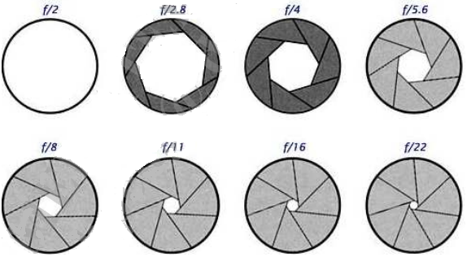
ISO（感光度）
原本是传统摄影用来衡量底片感光度的单位，数值越高，感光度越强，但噪声越明显，数码相机也沿用了此标准。ISO数值每增加一倍，感光度也增加一倍；SV为衡量ISO的单位，ISO100时，SV=5。
Focal Length（焦距）
焦距由于摄影机镜头的光学透镜（lens）而形成。摄影机或放映机的金属筒容纳了一组两边或一边有弧度（凸或凹）的透镜，组成一个综合镜头。从物体不同部分射出的光线，通过镜头之后，聚焦在底片的一个点上，使影像具有清晰的轮廓与真实的质感，这个点就叫焦点（focus）。所谓焦距（focal length），正是从镜头之镜片中间点到光线能清晰聚焦的那一点之间的距离。
较常见的有：8mm，15mm，24mm，28mm，35mm，50mm，85mm，105mm，135mm，200mm，400mm，600mm，1200mm等，还有长达2500mm超长焦望远镜头。
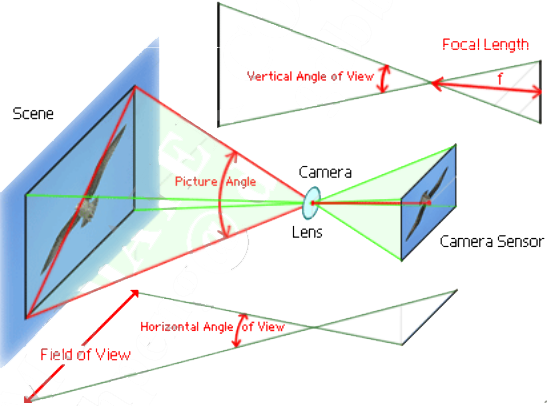
Saturation（饱和度）
色彩有各种不同的表示方式，常见的有RGB、Lab、HSV等色彩域（Color Domain），饱和度（Saturation）为HSV Domain的一个维度。
H：Hue，色相，色彩的色调，色彩在标准色环上的位置，以角度表示
S：Saturation，饱和度，色彩的纯度，以%表示。0%（灰色），100%（完全饱和）
V：Luminance，明度，色彩的亮度，以%表示。0%（黑色），100%（白色）
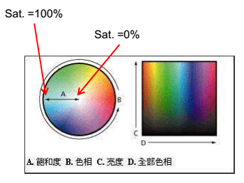
Sharpness（锐度）
Sharpness是指影像的锐利度，影像中高频成分越多，影像就越锐利。锐度主要由镜头决定，镜头品质好，成像越锐利；镜头品质差，成像越模糊。Sharpness可以由后端影像处理来加强，但是会有Side Effect：
Over Shoot：为了加强锐度，导致影像在Edge出现白边；
Noise Enhance：为了加强锐度，导致影像的Noise被当成Edge放大。
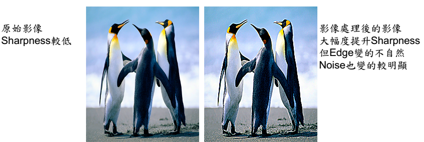
Contrast（对比度）
Contrast为对比度，代表影像中亮（白）和暗（黑）的差异。所谓高对比就是白的地方够亮，黑的地方够黑。一般对比度低有以下两种情况：
整体过亮：过曝、Gamma拉得太高
整体过暗：曝光不足、Gamma拉得太低
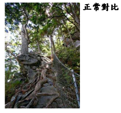
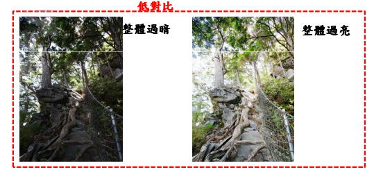
Color Temperature（色温）
色温的定义：将黑体从绝对零度开始加温，温度每升高一度称为1开氏度(用字母K来表示)，当温度升高到一定程度时候，黑体便辐射出可见光，其光谱成份以及给人的感觉也会着温度的不断升高发生相应的变化。于是，就把黑体辐射一定色光的温度定为发射相同色光光源的色温。常见光源色温：
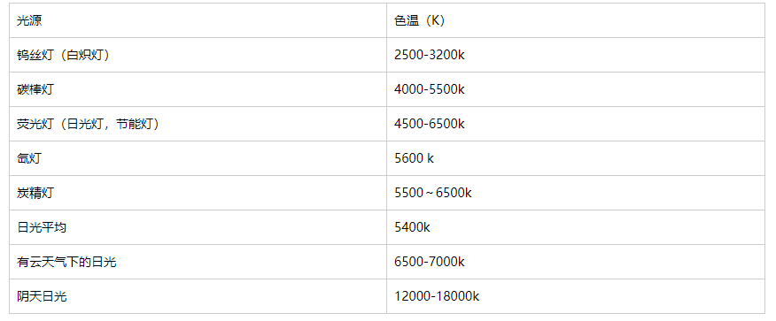
随着色温的升高，光源的颜色由暖色向冷色过渡，光源中的能量分布也由红光端向蓝光端偏移。
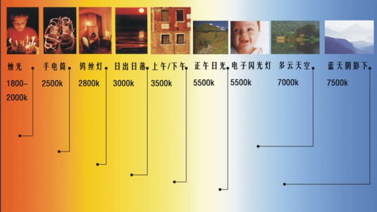
值得注意的是，实际光源的光谱分布各不相同，而色温只是代表了能量的偏重程度，并不反映具体的光谱分布，所以即使相同色温的光源，也可能引起不同的色彩反应。
人眼及大脑对色温有一定的生理和心理的自适应性，所以看到的颜色受色温偏移的影响较小，而Camera的Sensor没有这种能力，所以拍出来的照片不经过白平衡处理的话，和人眼看到的颜色会有较大的偏差（虽然人眼看到的和白光下真实的色彩也有偏差）。
太阳光色温随天气和时间变化的原因，与不同频率光的折射率有关：波长长的光线，折射率小，透射能力强，波长短的光线，折射率大，容易被散射，折射率低，这也就是为什么交通灯用红色，防雾灯通常是黄色，天空为什么是蓝色的等等现象的原因。
Shading（渐晕效应）
Shading是在图像边缘观测到亮度逐渐减小的现象。
镜头边沿的成像光线和镜头光轴有一个较大的夹角，沿着视场边缘光线的光圈减小。通光路径变长，边角光线成像的位移就较大，使得镜头边缘的光线是随着视角的变大，成像亮度急剧的下降，呈现出画面角落的影像发暗。
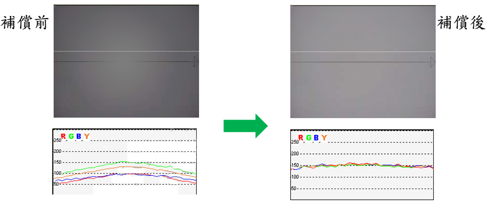
Flare（眩光）
镜头的表面反射或镜筒、反光镜组的内面所引起的反射光，到达底面后造成画面整体或一部分产生了雾蒙，降低了图像的锐度。镜片的镀膜及内面防反射处理的加强，可以大幅度的减少光斑，但被拍摄物体的状况不相同，不可能完全消除。
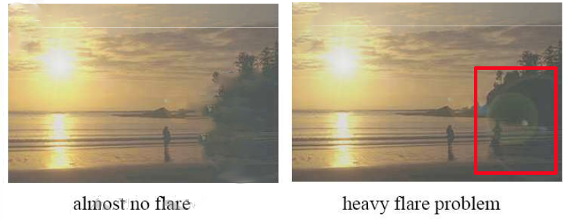
Defect Pixel（坏点）
坏点一般指在Sensor制造过程中因为单个像素的电路异常而不能正常表现感光亮度。其表现形式为全黑情况下成像中单个的白色和彩色的点或者全白情况下成像中的黑点。
如果坏点无法被校正的话，会影响到正常拍照的图片。
Flicker（频闪/水波纹）
Flicker是由频率干扰引起，交流电光源都有光强的波动，在中国交流电频率是50Hz，光强的波动就是100Hz，周期为10ms。如果Camera曝光时间不是10ms的整数倍，那么在不同的感光面接收到的光能量一定不一样，体现在图像上就是明暗条纹。
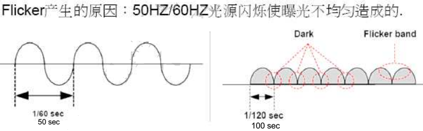
Moire（摩尔纹）
摩尔纹是数码相机等设备上的感光元件出现的高频干扰，会使图片出现彩色的高频率条纹；
摩尔纹是差拍原理的一种表现，空间频率略有差异的条纹叠加，由于条纹间隔的差异、重合位置会逐渐偏移，也会形成差拍；
消除摩尔纹，应该使镜头分辨率远小于感光元件的空间频率或者感光件像素密度能够大大提高、远远超过镜头的分辨率。
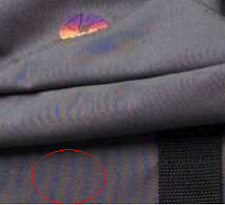
False Color（错误色）
False color的形成除了摩尔效应之外，感光器的三原色RGB色块排列也是其产生的原因。
在颜色取样的同时，因为空间差而没有取样到颜色，数码相机中的影像处理引擎仍会按照bayer pattern色块的顺序排列（RGB），试图为每一个像素去分配应有的颜色。这种情况在大量色块均匀的分布时是正确的，但当遇到突出部或者细微构造时，这样的颜色换算往往会出现错误和产生False Color。
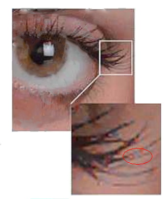
Purple Fringe（紫边）
紫边，目前产生的原因有好几种说法。比较广为接受的就是镜头色散和颜色插值运算的问题导致。（固有镜片会对不同的波长产生色散，蓝B、红R两色混合误差而产生）。这个问题发生在拍摄高反差的景物时，在明暗交界的边缘部分会出现异常的紫色
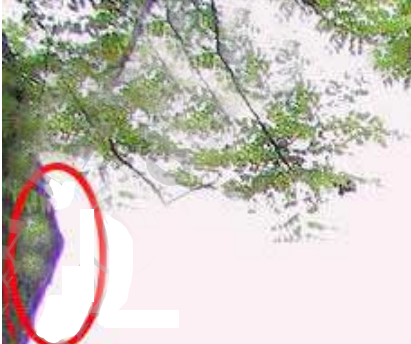
Image File Format-RGB/YUV/Bayer
RGB：根据三基色原理，大部分光F都可以用不同分量的R、G、B三个相加混合而成。F=r[R]+g[G]+b[B]，其中r、g、b分别为三基色参与混合的系数。调整三者的值可以混合出黑色光和白色光之间的各种颜色的光。
YUV：现代彩色影像系统中，采用彩色的sensor进行摄像，将所得的彩色影像信号进行插值分色，分别放大校正后得到RGB。再经过矩阵变换电路得到亮度信号Y和两个色差信号R-Y（即U）、B-Y（即V）。这种色彩的表示方式就是YUV色彩空间。根据YUV的采样格式可以分为YUV444、YUV4222、YUV420。
Bayer Pattern：Sensor获取彩色图像的方法是在Sensor表面覆盖只含红、绿、蓝3色的马赛克滤镜。对齐输出信号通过一定的处理算法实现彩色，所以这种感光器件的排列方式被称为Bayer Pattern。因为只记录了单个的感光信息，通常也称为raw image。
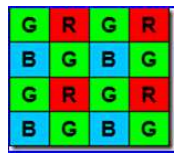
RGB转换YUV公式如下：
Y = 0.299R + 0.587G + 0.114B
U = -0.147R - 0.289G + 0.436B
V = 0.615R - 0.515G - 0.100B
YUV转换RGB公式如下：
R = Y + 1.14V
G = Y - 0.39U - 0.58V
B = Y + 2.03U
Resolution（解像力&分辨率）
分辨率指成像平面上1毫米间距内能分辨开的黑白相间的线条对数，单位为“线对/毫米”（lp/mm、line-pairs/mm）。受限于光学、材料和其它种种因素，每一个镜头、每一台数码相机都有其分辨能力的极限。评判分辨率方法：
MTF：引进反差对比的概念来检定镜头解像力。
目测ISO12233：达到多少TV lines。
Color Error（色差）
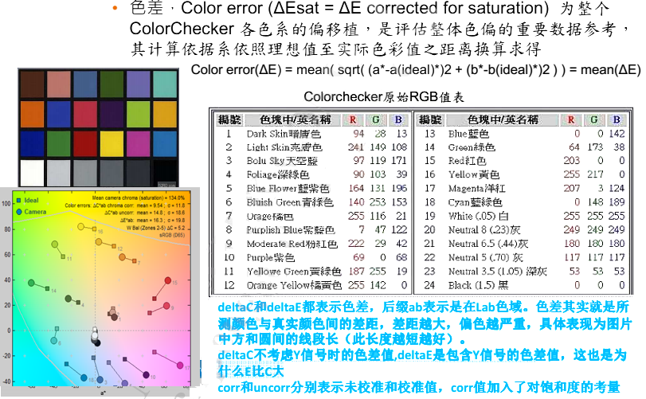
Black Level（暗电流）
由于电子感光元件受热而产生电子的扰动，形成暗电流。此暗电流让电子感光元件在没有外在光源的情况下，仍然会累积信号，导致拍摄黑色的影像结果不够黑、整体呈现雾状或产生偏色。
可以通过sensor本身将output Raw减去对应的Black Level值或通过ISP将Input Raw减去对应的Black Level值来进行校准。
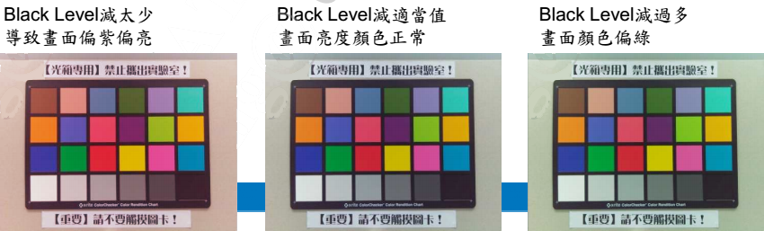
Gamma Curve（Gamma曲线）
数码感光元件对亮部和暗部的敏感度相同，呈线性曝光；人眼对暗部的敏感度较高，呈非线性。Gamma用来提高暗部来补偿感光元件和人眼之间这种亮度的差异。
Gamma拉得越高，亮度越亮，但会导致噪声越多。
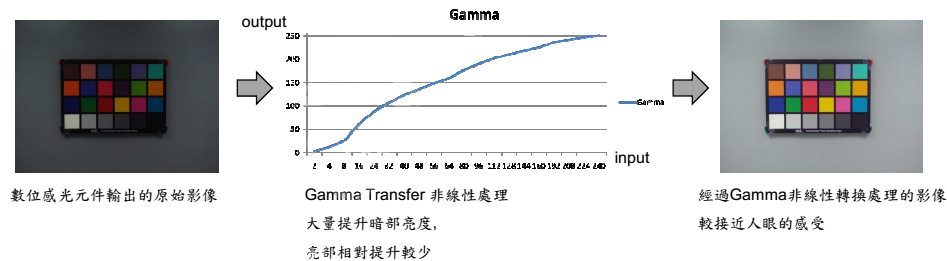
Image Noise（图像噪声）
（一）随机噪声
1.暗电流（高热激发的电子）散粒噪声
2.MOSFET复位噪声（KTC噪声或者电容噪声）
3.放大器噪声
4.光散粒（光的粒子波动性产生的）噪声
5.电源噪声
6.量化噪声
（二）固定图像噪声（FPN）
均匀光照条件下单个像素输出的信号变化。
由于CMOS每个感光二极管旁都搭配了一个ADC放大器，如果以百万像素计，那么就需要百万个以上的ADC放大器。每个像素结构中的光电二极管的尺寸、掺杂浓度、生成过程中的沾污以及MOS场效应管的参数的偏差等都会造成像素输出信号的变化。表现为：
1.转移劣化（低照度黑点和彩色的固定直线）
2.光电二极管的观光度不均匀（亮白点、亮点、黑点与亮斑纹）
Latitude（宽容度）
宽容度是指感光材料按比例正确记录景物亮度范围的能力。被摄景物表面由最亮部分至最暗部分的差别，可以用明暗间的比例数字来表示。假设：景物最亮部分比最暗部分要明亮50倍，那么它们之间的比例数字是1:50，这就是景物的明暗差别。感光片所具有的正确表现被摄景物明暗差别的能力，即为感光材料的宽容度，通常也称为曝光宽容度。
黑白胶片的宽容度是1:128左右，彩色负片的宽容度在1:32～64左右， 彩色反转片的宽容度仅为1:16～32左右，相纸的宽容度大约在1:30左右。
在摄影曝光中，使用宽容度较大的感光胶片去拍摄亮度差较小的景物，即使曝光量稍微多一些或少一些，对底片密度的影响不大。从实用的角度来讲，感光胶片的宽容度越大，对曝光控制越有利。
曝光与感光胶片宽容度之间的关系，大致存在以下三种情况：
（一）宽容度等于景物亮度范围
当感光胶片宽容度等于景物亮度明暗比例数时，感光胶片所能记录的亮度范围正好与景物由最亮到最暗的间距相同，在曝光上没有其他可选择的余地。如曝光稍有出入，即会使明亮部分或阴暗部分的层次受到损害。
（二）宽容度大于景物亮度范围
当感光胶片宽容度大于景物亮度明暗比例数时，感光胶片所能记录的这度范围超过景物由最亮到最暗的间距，在曝光上留有很大的选择余地，通常是在可容许的范围内，选用最低曝光量作为曝光标准，这样所获得的底片密度达到最低曝光量的标准，印放照片或拷贝正片均可获得最佳的影像效果。在胶片宽容度大于景物亮度范围的情况下，摄影曝光量的控制即使略有出入，也不会影响到景物明暗层次的再现。
（三）宽容度小于景物亮度范围
当感光胶片宽容度小于景物亮度明暗比例数时，感光胶片所能记录的亮度范围远不及景物由最亮到最暗的间距范围，在曝光上很难控制，要想全部记录下景物的明暗比例是不可能的。一般来说，这时应按被摄主体的不同情况，选择曝光的侧重点，以被摄景物主要部位的亮度来作为曝光的基准，兼顾到其他部分的层次。很显然，在这种情况下的曝光，势必要损失相当一部分的亮度范围的层次，其关键在于恰当地确定曝光侧重点，所损失的只是次要部位的一些层次。
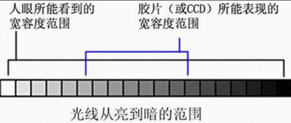
人眼的感光宽容度比胶片要高很多，而胶片的感光宽容度要比数码相机CCD高出很多！了解这个概念之后，我们就不难了解，为什么在逆光的条件下，人眼能看清背光的建筑物以及耀眼的天空云彩。而一旦拍摄出来，要么就是云彩颜色绚烂而建筑物变成了黑糊糊的剪影，要么就是建筑物色彩细节清楚而原本美丽的云彩却成了白色的一片。
再看人眼的结构，有瞳孔可以控制通光量，有杆状感光细胞和椎状感光细胞以适应不同的光强，可见即使人眼有着很高的感光宽容度，依然有亮度调节系统，以适应光强变化。
图像质量
图像质量指人们对一幅图像视觉感受的评价，它包括主观评价和客观评价。
（一）主观评价
主观评价通常认为图像质量指被测图像（即目标图像）相对于标准图像（即原图像）在人眼视觉系统中产生误差的程度。换一句话说就是相对于原图像，人眼认为目标图像几乎没有降质或损伤，则说目标图像的质量高，否则说图像质量差。另一种定义指在没有原图像的情况下，人眼能清晰地分辨图像中的事物，对图像中前景和背景、物体的轮廓、纹理等等能较好地区分，则说图像质量好，否则说图像质量差。
（二）客观评价
客观评价是指将测试数据化，由机器算法计算得出结果。
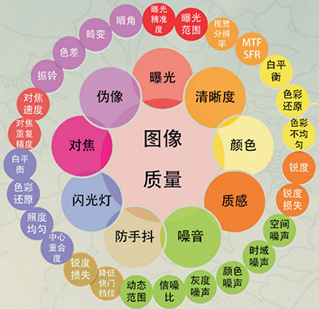
在国际上，Imatest和DxO Analyzer是比较有名的影像质量客观评测软件系统。Imatest和DxO Analyzer有异曲同工之处，都是把影响影像质量的各个因素拆分开来，分别对各个因素进行测试，由软件分析得出结论，可以非常直观看到各个方面的表现。Imatest(http://www.imatest.com )是美国Imatest公司旗下的影像质量评测软件系统，测试项目有镜头分辨率测试（SFR－MTF）、色差、色彩还原度、色彩空间等等。DxO Analyzer(http://www.dxo.com )是法国DxO公司旗下的影像质量评测软件系统，测试项目与imatest大同小异。DxO系统不仅可以测试镜头、sensor/ISP/video，甚至是多阵列的摄像头。